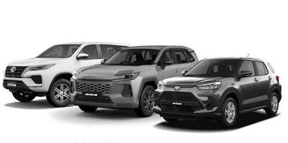

Toyota Corolla
Es un automóvil utilizado para movilizarse por la ciudad y carretera.
Conoce más sobre la marca Toyota.
Toyota es una empresa japonesa dedicada a la fabricación de automóviles y otros vehículos.
Toyota Motor Corporation fue fundada en 1937 y es reconocida por producir diferentes modelos de vehículos.

Toyota ofrece diferentes modelos para distintas necesidades.
Es un automóvil utilizado para movilizarse por la ciudad y carretera.
Es una camioneta utilizada para transportar personas y carga.
Es un vehículo SUV que ofrece espacio para pasajeros y equipaje.
Toyota cuenta con diferentes tipos de vehículos, incluyendo automóviles, camionetas y SUV.
Algunos modelos se utilizan para el transporte diario y otros para viajes y actividades de trabajo.
A continuación puedes observar un video relacionado con Toyota.